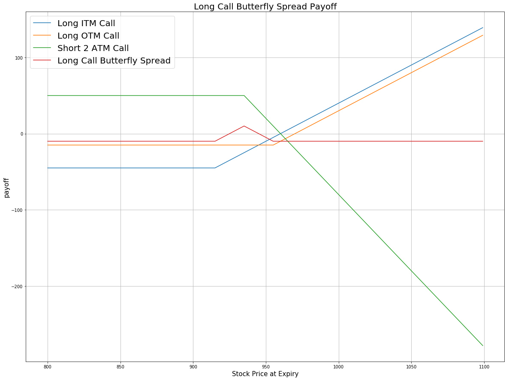

Definition
Butterfly Spread strategy involves four option contracts with the same expiration but three different strike prices. There are four kinds of Butterfly Spread:
| Name |
Strategy |
| Long butterfly spread with calls |
Buy 1 ITM call, sell 2 ATM call, buy 1 OTM call |
| Long butterfly spread with puts |
Buy 1 ITM put, sell 2 ATM put, buy 1 OTM put |
| Short butterfly spread with calls |
Sell 1 ITM call, buy 2 ATM call, sell 1 OTM call |
| Short butterfly spread with puts |
Buy 1 ITM put, sell 2 ATM put, buy 1 OTM put |
Butterfly Spread strategy consists of three legs with a total of four options. In this tutorial, we take Long Butterfly Spread as an example: long one ITM call, short two ATM calls and long one OTM call. All the calls have the same expiration. On the other hand, the middle strike is halfway between the lower and the higher strikes.
The aim of Butterfly Spread strategy is to gain profits when traders think that the underlying stock will not rise or fall much by expiration.
Payoff
price = np.arange(800,1100,1)
# Suppose the undelying price at time 0 is 935
k_itm = 915 # the strike price of ITM call
k_otm = 955 # the strike price of OTM call
k_atm = 935 # the strike price of ATM call
premium_itm = 45 # the premium of ITM call
premium_otm = 15 # the premium of OTM call
premium_atm = 25 # the premium of ATM call
# payoff for the long ITM call position
payoff_itm_long = [max(-premium_itm, i-k_itm-premium_itm) for i in price]
# payoff for the long OTM call position
payoff_otm_long = [max(-premium_otm, i-k_otm-premium_otm) for i in price]
# payoff for the 2 short ATM call position
payoff_atm_short = [min(2*premium_atm, -2*(i-k_atm-premium_atm)) for i in price]
# payoff for Butterfly Spread Strategy
payoff = np.sum([payoff_itm_long,payoff_otm_long,payoff_atm_short], axis=0)
plt.figure(figsize=(20,15))
plt.plot(price, payoff_itm_long, label = 'Long ITM Call')
plt.plot(price, payoff_otm_long, label = 'Long OTM Call')
plt.plot(price, payoff_atm_short, label = 'Short 2 ATM Call')
plt.plot(price, payoff, label = 'Long Call Butterfly Spread')
plt.legend(fontsize = 20)
plt.xlabel('Stock Price at Expiry',fontsize = 15)
plt.ylabel('payoff',fontsize = 15)
plt.title('Long Call Butterfly Spread Payoff',fontsize = 20)
plt.grid(True)

Implementation
Step 1: Initialize your algorithm including setting the start date and the end date, setting the cash and implement a coarse selection of option contract. SetFilter(-9, 9, timedelta(30), timedelta(60)) helps us choose the contracts which expire in 30 to 60 days from now on. Since ITM call strike and OTM call strike are symmetrical with ATM call strike. For the strike parameter, the first parameter is the minimum strike rank relative to market price, the second parameter is the maximum strike rank relative to market price. The rank of ATM contract is 0. Here we need to choose 2 numbers which are symmetrical with 0.
def Initialize(self):
self.SetStartDate(2017, 4, 01)
self.SetEndDate(2017, 5, 30)
self.SetCash(150000)
equity = self.AddEquity("GOOG", Resolution.Minute)
option = self.AddOption("GOOG", Resolution.Minute)
self.symbol = option.Symbol
option.SetFilter(-9, 9, timedelta(30), timedelta(60))
# use the underlying equity GOOG as the benchmark
self.SetBenchmark(equity.Symbol)
Step 2: Second we need to choose an expiration date for all the contracts in Butterfly Spread strategy. Then filter out all the call options expire on that date.
for i in optionchain:
if i.Key != self.symbol: continue
chain = i.Value
# sorted the optionchain by expiration date and choose the furthest date
expiry = sorted(chain,key = lambda x: x.Expiry, reverse=True)[0].Expiry
# filter the call options from the contracts expires on that date
call = [i for i in chain if i.Expiry == expiry and i.Right == 0]
Step 3: Sort the call options by their strike price in ascending order. Then the ATM option is the one which has the smallest absolute value of the difference between the strike price and the underlying asset price. The OTM option is the last one in this call options list which has the highest strike price. The corresponding ITM option is the first one in the list which has the lowest strike price.
# sorted the contracts according to their strike prices
call_contracts = sorted(call,key = lambda x: x.Strike)
if len(call_contracts) == 0: continue
# choose OTM call
self.otm_call = call_contracts[-1]
# choose ITM call
self.itm_call = call_contracts[0]
# choose ATM call
self.atm_call = sorted(call_contracts,key = lambda x: abs(chain.Underlying.Price - x.Strike))[0]
Step 4: Purchase 1 ITM call option and 1 OTM call option, then sell 2 ATM call option.
self.Sell(self.atm_call.Symbol ,2)
self.Buy(self.itm_call.Symbol ,1)
self.Buy(self.otm_call.Symbol ,1)
Summary
From the following algorithm, at time 0, the GOOG share price is $832.8. We purchase 1 OTM call option strike at $855, 1 ITM call option strike at $810 and sell 2 ATM options strike at 835. At the expiry 05/19/2017, the share price is $930, then the long positions of the ITM option and the OTM option are all exercised, we buy 100 GOOG shares at $810 and buy another 100 shares at $855. At the same time, the 2 short positions of the ATM option are also exercised. We have to sell 200 GOOG shares to option holder at $835. Then we no longer hold positions after the expiration of this Long Call Butterfly Spread. Since the stock price had a sharp increase during the life of options, we make no profits from this strategy.
Algorithm
Backtest using SetFilter
Backtest using OptionChainProvider